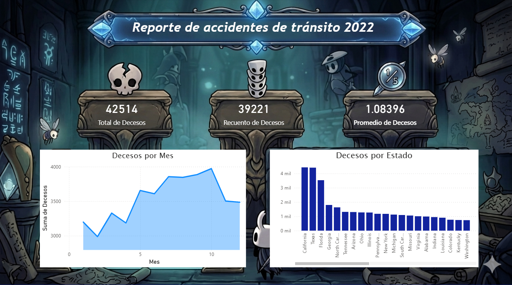

TABLA_01 · logros_microsoft
Logros en Microsoft Learn
13 módulos y rutas completados en las áreas de Power BI, fundamentos de la nube y análisis de datos.
Power BI & datos
Introducción a la compilación con Power BI
Bloques de creación de Power BI y flujo de trabajo para informes interactivos.
Ver módulo →Obtener datos en Power BI
Conexión a orígenes de datos: Excel, bases relacionales y almacenes NoSQL.
Ver módulo →Limpiar, transformar y cargar datos en Power BI
Uso de Power Query para preparar y perfilar datos antes del modelado.
Ver módulo →Preparación de datos para el análisis con Power BI
Ruta de aprendizaje: conexión, limpieza y modelado de datos en Power BI.
Ver ruta →Elección de un marco de modelo de Power BI
Modelos de importación, DirectQuery y compuesto: cuándo usar cada uno.
Ver módulo →Crear informes interactivos con Copilot para Power BI
IA generativa aplicada a la creación de modelos semánticos e informes.
Ver módulo →Fundamentos de la nube (Azure)
Descripción de la informática en la nube
Conceptos de nube, modelos de implementación y responsabilidad compartida.
Ver módulo →Descripción de las ventajas de usar servicios en la nube
Escalabilidad, confiabilidad, seguridad y sostenibilidad en la nube.
Ver módulo →Descripción de los tipos de servicio en la nube
IaaS, PaaS y SaaS: diferencias y casos de uso de cada modelo.
Ver módulo →Introducción a la infraestructura en la nube: conceptos de la nube
Ruta 1 de "Aspectos básicos de Microsoft Azure" — base para el examen AZ-900.
Ver ruta →Análisis de datos & Microsoft Fabric
Descripción del análisis de datos
Roles en los datos y tareas propias de un analista de datos.
Ver módulo →Introducción al análisis de datos de Microsoft
Ruta que integra Power BI, Fabric y Copilot en el flujo de un analista de datos.
Ver ruta →Introducción al análisis de un extremo a otro mediante Microsoft Fabric
Cómo Microsoft Fabric cubre las necesidades analíticas en una sola plataforma.
Ver módulo →TABLA_02 · dashboards_ia
Dashboards con IA
Análisis de accidentes de tránsito fatales (FARS 2022, EE. UU.) construidos con distintas herramientas.
Dashboard generado con IA
Panorama nacional interactivo: evolución mensual, zonas, clima y causas del siniestro.
Reporte en Power BI Desktop
Mismo dataset FARS 2022 analizado en Power BI: decesos por mes y por estado.

TABLA_03 · investigacion
Artículo de investigación
Trabajo académico — Universidad Nacional de Cañete, Escuela de Ingeniería de Sistemas.
Análisis comparativo del rendimiento de procesamiento de datos en Apache Hadoop MapReduce, Apache Spark y Apache Flink sobre un entorno virtualizado Debian GNU/Linux
Curso de Big Data (VII ciclo). Evaluación comparativa de tres motores de procesamiento distribuido en un entorno virtualizado, midiendo rendimiento y eficiencia sobre cargas de trabajo equivalentes.
TABLA_04 · avances_curso
Avances del curso
Proceso completo detrás del artículo: configuración del clúster, generación de datos y benchmarks de Hadoop, Spark y Flink.
Entorno y configuración
Generación de datos de prueba
Ejecución y resultados
Proceso completo documentado: desde la configuración del clúster hasta los resultados del benchmark.